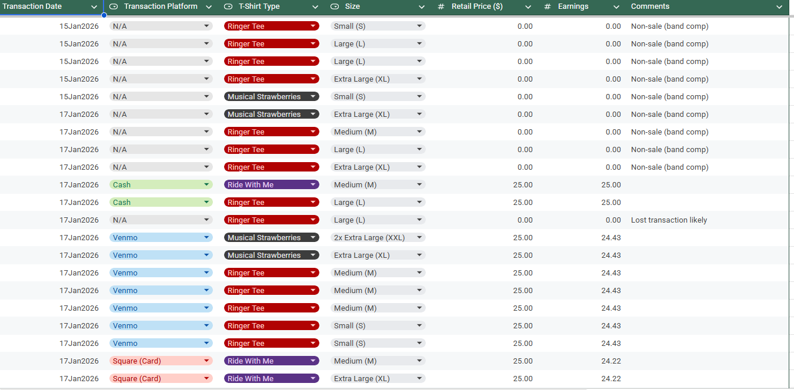

The project integrates with multiple platforms—Square, Squarespace, and Venmo—to fetch transaction records. It
processes this data into a standardized format (categorizing items like t-shirt types and sizes), calculates net
earnings, and logs the results directly into a Google Sheet for centralized bookkeeping.
View project page

BroncoDrome is a 3rd-person vehicular combat game developed in Unreal 4, C++, and Blueprints. This was my group senior design project where we were tasked to design and develop a complex architecture project over the course of several months. In the end, our group was able to create the base of a driving game inspired by other vehicular combat games (namely DeathDrome and Mario Kart). Players drive around an arena inspired by Boise State’s Albertson’s Stadium, get pick-ups that temporarily boost stats, and fire a blaster at other enemy, AI controlled vehicles. Overall, the goal of the project was to develop a base for a game that future senior design groups can take over and add features to.
View project page

Common co-op is a small common-core multiplication game developed in Unity and C# and ported to web browsers via WebGL. This was the final project for my Human-Computer Interaction course at Boise State, which is where we rapidly iterated on UI/UX features for our respective clients. In this game, 4th and 5th grade children drag and drop numbers onto a box-multiplication problem to complete the expression. They progress through increasingly challenging problems until they are given a final score based on their performance.
View project page

“Hoowan” is my game engine that I’m developing using C++, OpenGL, and several desktop application libraries. I started this project with the intention of learning more about game engine architecture, C++ development practices, and real-time rendering. This is by far my most ambitious project, and I don’t really foresee an ending point, but I nonetheless hope to periodically pour more into something I’m passionate about. Currently, Hoowan boasts a 2D rendering submission API written in OpenGL, an entity-component system built using EnTT, an input-polling event system for user interaction, and a basic collision detection/correction system. While not completely ready for development, very basic 2D games can be built using Hoowan’s statically-linked library and editor application.
View project page

Chasm is a 3rd-person action role-playing game developed in Unity. It’s heavily inspired by other games of the genres, such as Dark Souls and the Legend of Zelda. This started off as a small side project to familiarize myself more with Unity, but it has managed to become a competent prototype in its own right. The game has you explore a dark, mysterious dungeon while fighting monsters and solving puzzles.
View project page

This is a personal project I developed to practice more advanced concepts in C++. Given a target resolution, color range definitions, zoom operations, and an output file path, this program generates a fractal image using a computation-clamped Mandelbrot algorithm.
View project page

This is my procedural terrain generator built using Unity. In this project, I researched and implemented several fractal-based procedural terrain generation techniques for my Advanced Computer Graphics course at Boise State University. It features biome partitioning, which modifies geometry noise-space to match different biomes, blends different materials on prefab geometry blocks, and procedurally places models based on the biome. I've finished the first version of this project, and I hope to add more features in the future.
View project page

This is an Android app that I’ve developed in my free time. It allows users to create, load, edit, and delete wheels that can be spun for a random outcome. The idea came from my roommates arguing over where to eat and what to movie to watch one Friday night. I took this as an excuse to delve into Android Studio and animate a basic wheel using OpenGL.
View project page

This was my final project for my Data Structures course at Boise State University. This group project tasked my team with developing a BTree data structure in Java. After thoroughly testing our implementation, we were given several sample genetic code sequences that we ran through our BTree implementation. As sequences of size 'n' were parsed, those sequences would automatically be inserted into a self-balancing and self-organized BTree. Once finished, the program would report the frequency of each sequence and exit.
View project page

At my time at Boise State's Department of Extended Studies, I was tasked with creating a new way to organize adjunct teaching applicants for online courses. In order to create this, I created a simple GUI in Java that allowed anyone with access to our collective drive to add, edit, remove, or search for potential candidates. Data is stored in a local SQL database and queries are made using internal prepared statements. In the main menu, applicants can be sorted or searched for using a tag system (business, mathematics, etc.).
View project page

This assignment from my artificial intelligence course tasked my team with creating an AI agent that could effectively play a game known as "Suspicion". The goal of the game is to travel a board, ask other players questions, and attempt to pinpoint the identity of other players while also collecting gems for extra points. Our agent utilizes statistical data from branching decisions when choosing where to move, how to play its cards, and deducting the identity of other players using entropy and information gain functions. In the end, we created an agent that can consistently beat random-selecting agents, as well as some of the other agents from our course.
View project page

This was my final project for my computer graphics course. My team chose to create a 3D marble game using WebGL and three.js. This game features several sequential levels that the player must navigate using a marble with light rolling physics.
View project page

This was one of my projects for my artificial intelligence course. We were tasked with developing an agent that, given a formatted list of grocery items with constraints (i.e., bread can only be bagged with cookies), would output a list of newline separated strings, which represents how our agent decided to bag the groceries. We represented several different methods for deriving solutions, including DFS/BFS search through a decision tree with optional decision pruning and arc-consistency checking to increase tree traversal performance in large problem sets.
View project page

This was one of my projects for my Computer Graphics course at Boise State University. This project tasked us with utilizing Javascript and WebGL to create a 100 x 100 grid with corresponding faces and normals, loading heightmap data into fragment/vertex shaders, and pulling vertices in a vertex shader in order to simulate terrain lit with a point and ambient light. The interactive HTML page also allows users to mess with matrix operations as well as lighting colors (link below).
View project page

This was my final project for my Systems Programming course at Boise State University. This project tasked us with implementing a Linux bash shell prompt in C called “SMASH”. It has several features, including directory handling, common Linux commands, piping and redirecting operations, multithreading, and a command history log. Testing with Valgrind verifies that no memory is leaked in normal usage.
View project page